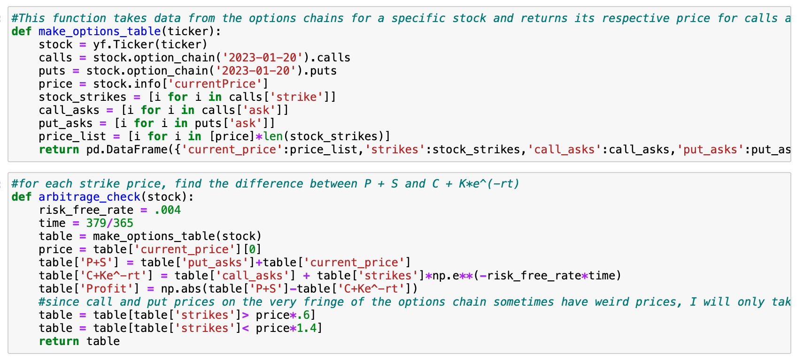
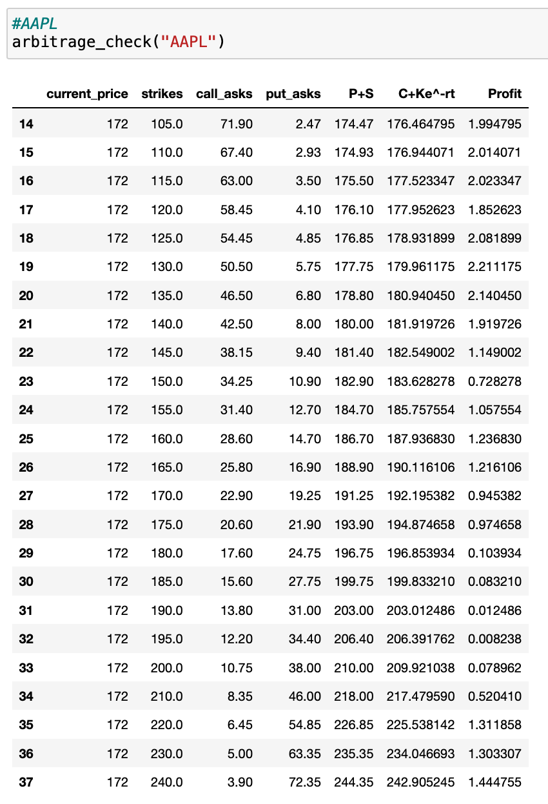
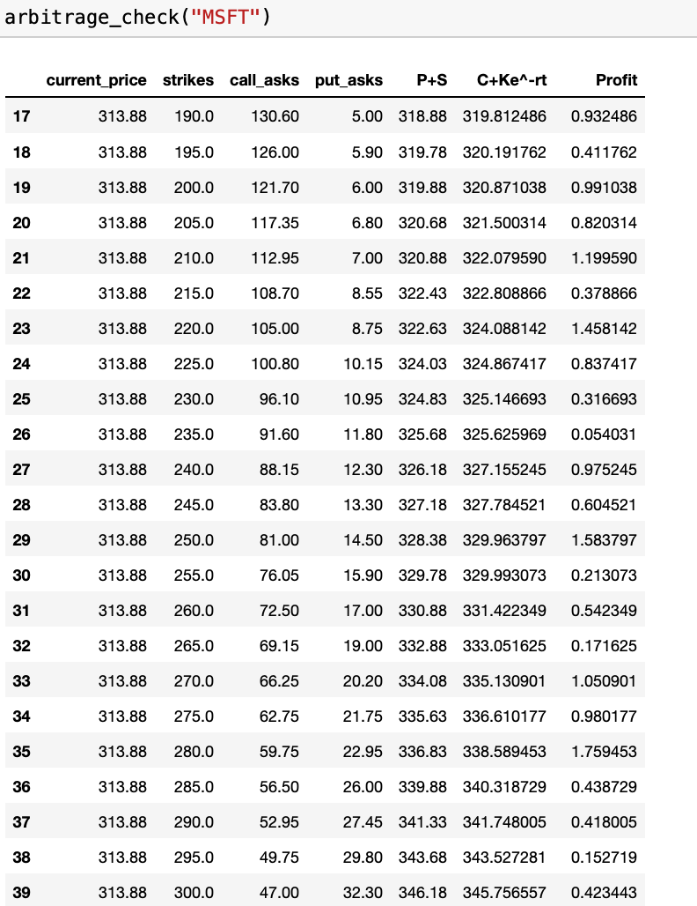
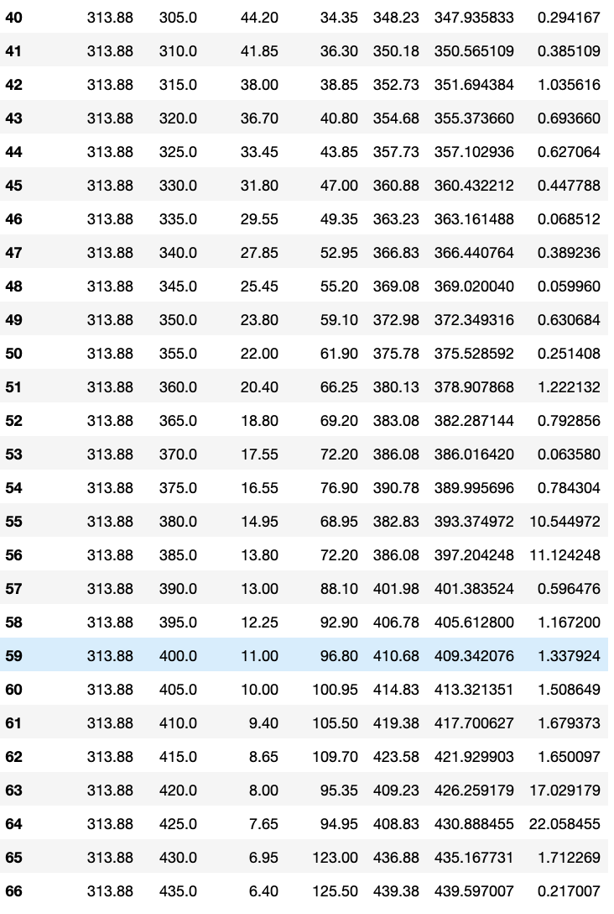
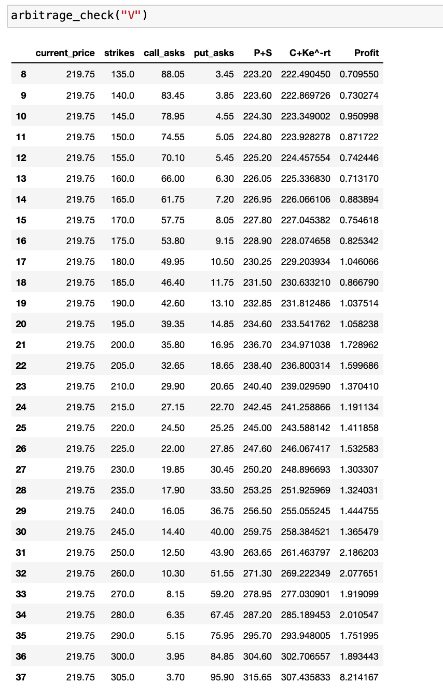
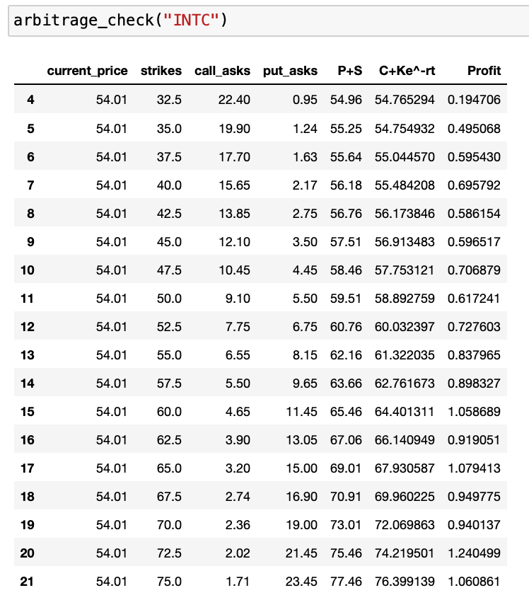
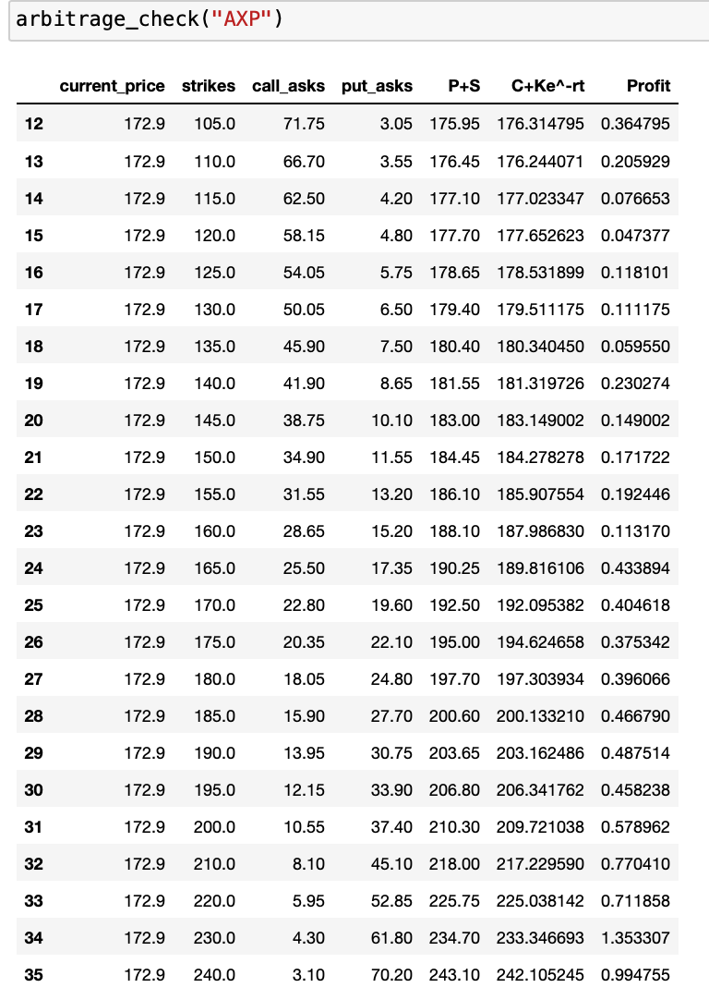
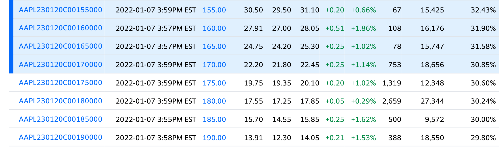

Put-Call Parity
In my finance class, while the professor attempted to create as many real-world examples as possible, it is simply easier to do hypothetical examples sometimes. As a result, I often feel like more real-life examples would have increased my grasp on the subject.
Therefore, in this project, I look at whether or not put-call parity holds for a variety of stocks using real numbers from after closing on January 6, 2022. For each strike price, I will examine whether or not put-call parity holds and calculate what the present value of the profit for making the correct trade would be.
For my code, I will use yfinance which you can find here. This is a great way to import data from Yahoo Finance very easily.
Equation: P + S = C + Ke^(-rt)
For my use of r, I went online to the Treasury's website and looked at the 1-year yield for a Treasury Bond. The yields all existed around .4% or .004. Therefore, I will be using r = .004 in my equation.
In this analysis, I will examine whether or not put-call parity holds for the following stocks: AAPL, MCD, AXP, MSFT, and INTC. All of these stocks are members of the Dow 30. For every stock, I will look at the calls and puts with an expiration of 1 year (January 20, 2023).
0) Functions
Here is an image of the code I wrote to extract data from Yahoo Finance and turn all the data into a complete table that shows the potential profit for each strike. For a more complete view of the code click here.
As a brief explanation of the code, however, first, the code extracts the option chain for each stock that is entered and then puts the relevant information in a Pandas DF. Then, the code checks for the difference between P + S and C + K*e^-rt. The difference reprents the present value of the profit that you would make from doing the correct trade.
First, I will simply display the data for each stock and then after every stock I will summarize all the results together.
1) AAPL - Apple
2) MSFT - Microsoft
 3) V - Visa
4) INTC - Intel
5) AXP - American Express
5) Results/Summary
One interesting, yet expected, result of the data is that in all of the cases across all of the stocks, Put-Call parity does not hold. There are simply way too many different moving factors that could result in a slightly different from perfect pricing of put and call options for Put-Call parity to hold. Also, the risk-free rate is a somewhat subjective rate which further disturbs the validity of Put-Call parity.
Knowing, therefore, that Put-Call parity does not exactly hold in almost every case, the question then becomes whether or not we can turn this fact into a system that results in large amounts of guaranteed profit for myself or you. The sad reality, of course, is that this cannot happen or else everyone would be rich.
Yes, on a very small scale, one could make guaranteed profits of say $1, like most of the tables suggest is possible for most of the strike prices, but as a large-scale trading strategy, it would not be possible to scale this system up to make, say, 10s of thousands of dollars on an individual scale, let alone billions of on the scale that Wall-Street has come to expect.
To understand why it would not be possible to scale up this strategy, first look at the volume of options being traded in any given example. The picture below shows the volume for call options with strikes around the money. The volume is represented in the column that is 3rd from the right. Open interest is represented in the column that is 2nd from the right.
As the graph shows, the volume for call options that are even close to at the money, there is not a large amount of volume and the open interest is not too large. This means that it is not feasible to scale this trading strategy to be large enough for any meaningful profit for an individual let alone a large firm.
Since it is not feasible to scale this up into a large money-making strategy, an individual is not incentivized to, at least from the data that I collected from these specific stocks on this specific day, take advantage of any arbitrage opportunities. Because of this lack of incentive to arbitrage Call-Put parity, in practice, it is reasonable to say that Put-Call parity does hold, even though technically there seems to exist a small arbitrage opportunity.